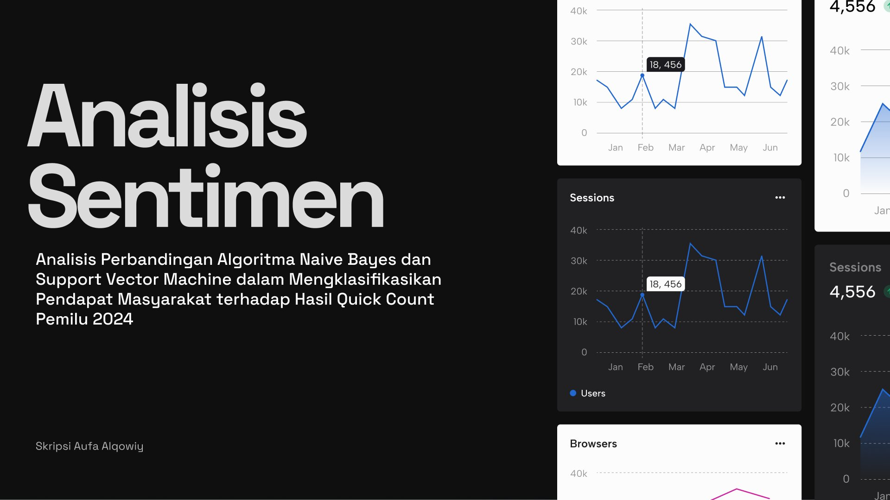

Analisis Sentimen Quick Count Pemilu 2024
skripsi · data science & nlp
Analisis Perbandingan Algoritma Naive Bayes dan Support Vector Machine dalam Mengklasifikasikan Pendapat Masyarakat Terhadap Hasil Quick Count Pemilu 2024. Penelitian ini membandingkan performa kedua algoritma klasifikasi teks untuk mengukur sentimen publik terhadap hasil quick count pemilu, menggunakan data dari media sosial yang diolah melalui tahap preprocessing NLP sebelum diklasifikasikan.
Role
Peneliti
Collaborators
Solo
Duration
2025
Tools
Python
Repo GitHub

Distribusi sentimen positif, negatif, dan netral pada dataset.

Confusion matrix perbandingan Naive Bayes vs SVM.

Perbandingan akurasi, precision, recall, dan F1-score kedua algoritma.